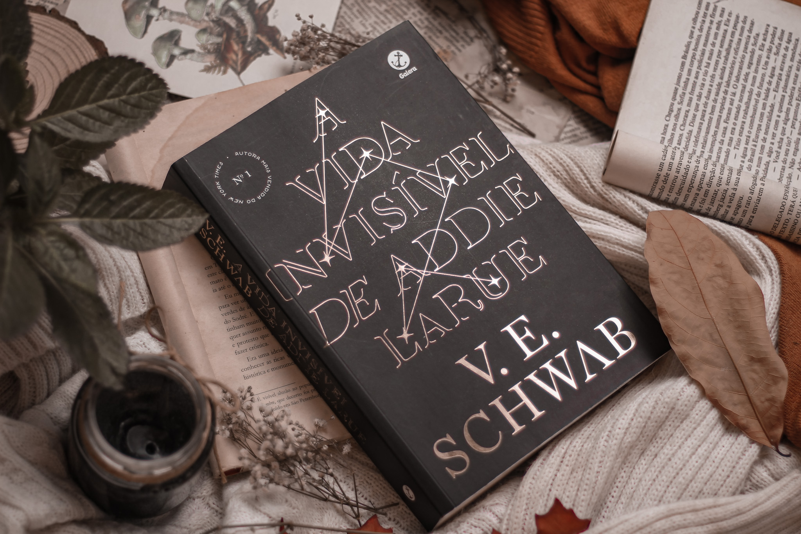
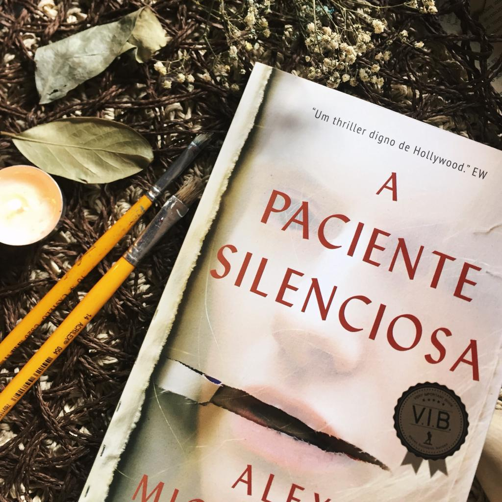
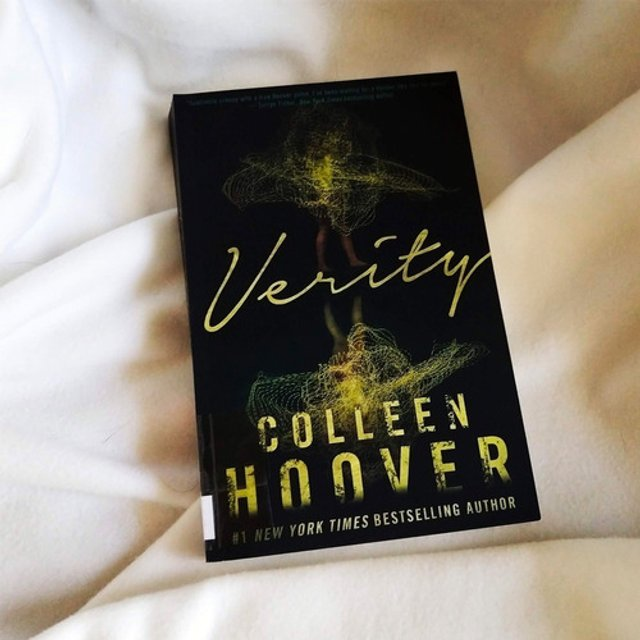

Livros Fantásticos
- 


- 
- 
A vida invísivel de Addie Larue
França: 1714. Addie LaRue não queria pertercer a ninguém ou a lugar nenhum. Em um momento de desespero, a jovem faz um pacto: a vida eterna, sob a condição de ser esquecida por quem a conhecer. Um piscar de olhos, e, como um sopro, Addie se vai. Uma virada de costas, e sua existência se dissipa na memória de todos.
Após tanto tempo vivendo uma existência deslumbrante, aproveitando a vida de todas as formas, fazendo uso de tantos artifícios quanto fosse possível e viajando pelo tempo e espaço, através dos séculos e continentes, da história e da arte, Addie entende seus limites e descobre ― apesar de fadada ao esquecimento ― até onde é capaz de ir para deixar sua marca no mundo.
Trezentos anos depois, em uma livraria, um acontecimento inesperado: Addie LaRue esbarra com um rapaz.
Ele enuncia cinco palavras.Cinco palavras capazes de colocar a vida que conhecia abaixo:
"Eu me lembro de você."
É assim que acaba
Em É assim que acaba , Colleen Hoover nos apresenta Lily, uma jovem que se mudou de uma cidadezinha do Maine para Boston, se formou em marketing e abriu a própria floricultura. E é em um dos terraços de Boston que ela conhece Ryle, um neurocirurgião confiante, teimoso e talvez até um pouco arrogante, com uma grande aversão a relacionamentos, mas que se sente muito atraído por ela.
Quando os dois se apaixonam, Lily se vê no meio de um relacionamento turbulento que não é o que ela esperava. Mas será que ela conseguirá enxergar isso, por mais doloroso que seja?
É assim que acaba é uma narrativa poderosa sobre a força necessária para fazer as escolhas certas nas situações mais difíceis. Considerada a obra mais pessoal de Hoover, o livro aborda sem medo alguns tabus da sociedade para explorar a complexidade das relações tóxicas, e como o amor e o abuso muitas vezes coexistem em uma confusão de sentimentos.
É assim que começa
Lily Bloom continua administrando uma floricultura. Seu ex-marido abusivo, Ryle Kincaid, ainda é um cirurgião. Mas agora os dois estão oficialmente divorciados e dividem a guarda da filha, Emerson.
Quando Lily esbarra em Atlas ― com quem não fala há quase dois anos ―, parece que finalmente chegou o momento de retomar o relacionamento da adolescência, já que ele também está solteiro e parece retribuir os sentimentos de Lily. Mas apesar de divorciada, Lily não está exatamente livre de Ryle. Culpando Atlas pelo fim de seu casamento, Ryle não está nada disposto a aceitar o novo relacionamento de Lily, ainda mais com Atlas, o último homem que aceitaria ver perto de sua filha e da ex-esposa.
Alternando entre os pontos de vista de Atlas e Lily, É assim que começa retoma logo após o epílogo de É assim que acaba . Revelando mais sobre o passado de Atlas e acompanhando a jornada de Lily para abraçar a sua segunda chance, no amor enquanto lida com um ex-marido ciumento, É assim que começa prova que ninguém entrega uma leitura mais emocionante do que Colleen Hoover.
Os sete maridos de Evelyn Hugo
Com todo o esplendor que só a Hollywood do século passado pode oferecer, esta é uma narrativa inesquecível sobre os sacrifícios que fazemos por amor, o perigo dos segredos e o preço da fama.
Lendária estrela de Hollywood, Evelyn Hugo sempre esteve sob os holofotes ― seja estrelando uma produção vencedora do Oscar, protagonizando algum escândalo ou aparecendo com um novo marido… pela sétima vez. Agora, prestes a completar oitenta anos e reclusa em seu apartamento no Upper East Side, a famigerada atriz decide contar a própria história ― ou sua “verdadeira história” ―, mas com uma condição: que Monique Grant, jornalista iniciante e até então desconhecida, seja a entrevistadora. Ao embarcar nessa misteriosa empreitada, a jovem repórter começa a se dar conta de que nada é por acaso ― e que suas trajetórias podem estar profunda e irreversivelmente conectadas.
Verity
Verity Crawford é a autora best-seller por trás de uma série de sucesso. Ela está no auge de sua carreira, aclamada pela crítica e pelo público, no entanto, um súbito e terrível acidente acaba interrompendo suas atividades, deixando-a sem condições de concluir a história... E é nessa complexa circunstância que surge Lowen Ashleigh, uma escritora à beira da falência convidada a escrever, sob um pseudônimo, os três livros restantes da já consolidada série.
Para que consiga entender melhor o processo criativo de Verity com relação aos livros publicados e, ainda, tentar descobrir seus possíveis planos para os próximos, Lowen decide passar alguns dias na casa dos Crawford, imersa no caótico escritório de Verity - e, lá, encontra uma espécie de autobiografia onde a escritora narra os fatos acontecidos desde o dia em que conhece Jeremy, seu marido, até os instantes imediatamente anteriores a seu acidente - incluindo sua perspectiva sobre as tragédias ocorridas às filhas do casal.
Quanto mais o tempo passa, mais Lowen se percebe envolvida em uma confusa rede de mentiras e segredos, e, lentamente, adquire sua própria posição no jogo psicológico que rodeia aquela casa. Emocional e fisicamente atraída por Jeremy, ela precisa decidir: expor uma versão que nem ele conhece sobre a própria esposa ou manter o sigilo dos escritos de Verity?